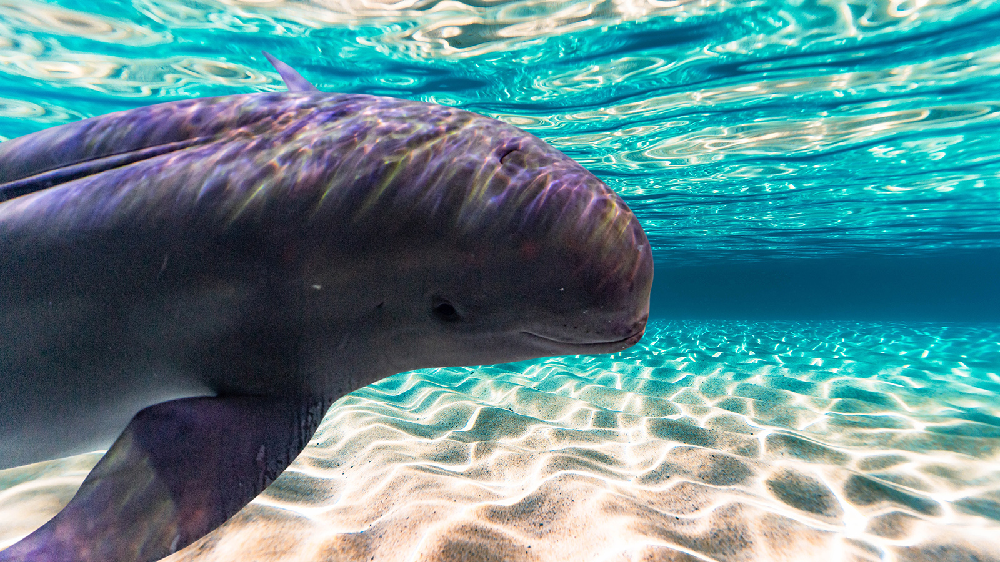

A Importância da Conservação
Golfinho do Rio YangtzeO boto sem barbatana de água doce, também conhecido como golfinho do rio Yangtze, também vive nas águas mais rasas do Yangtze. Sem a barbatana dorsal, o povo da China apropriadamente chamou-o de “porco do rio”. O boto sem barbatana também corre o risco de ser extinto. Apenas cerca de 800 animais permanecem no rio e esse número está diminuindo rapidamente. Mas, tal como acontece com o crocodilo chinês, estão a ser feitos esforços para diminuir a dragagem de areia, que turva os lagos e perturba o habitat do boto.

Com um comprimento de até 3 m e um peso de até 185 kg